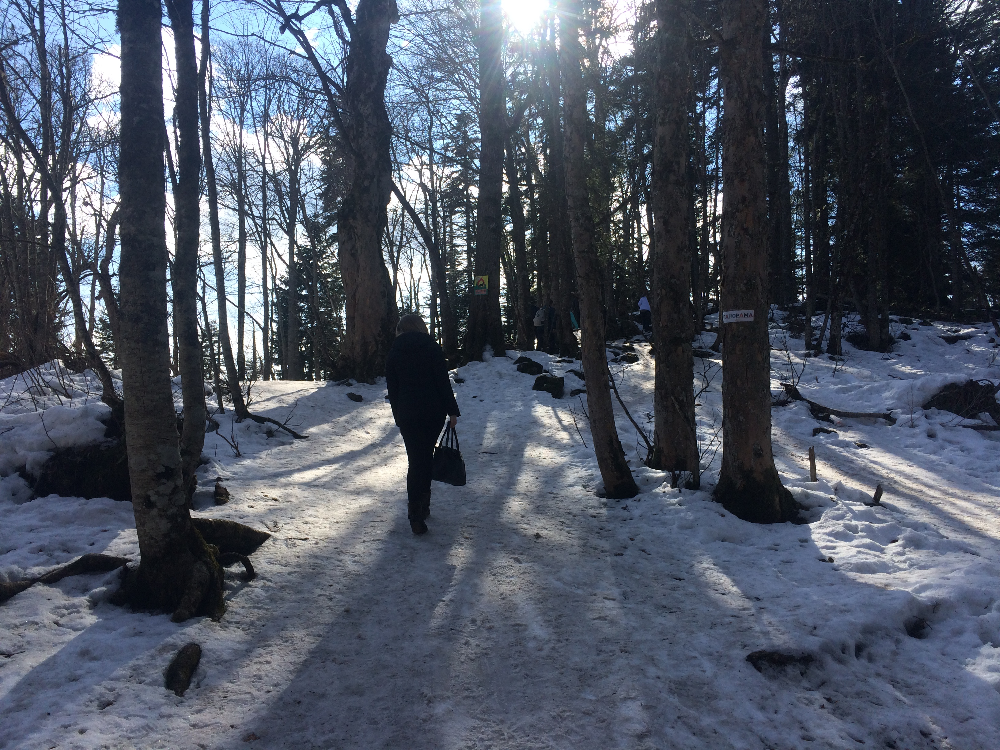
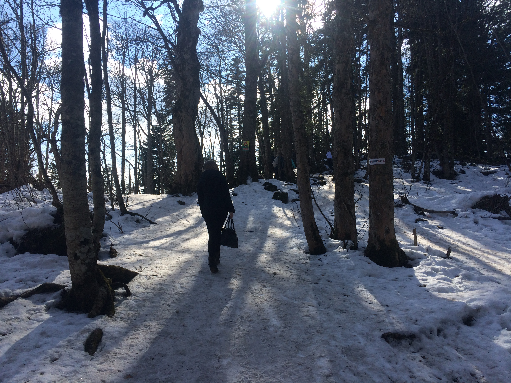
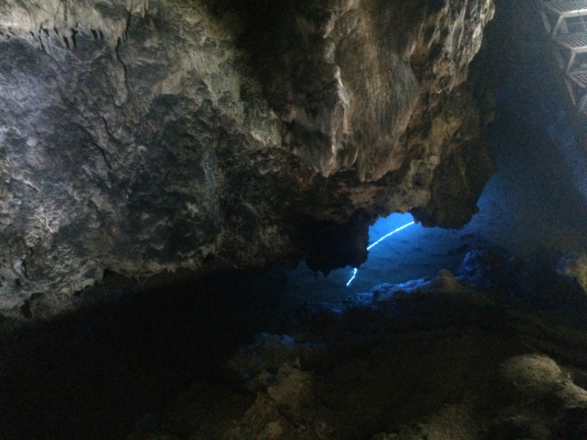
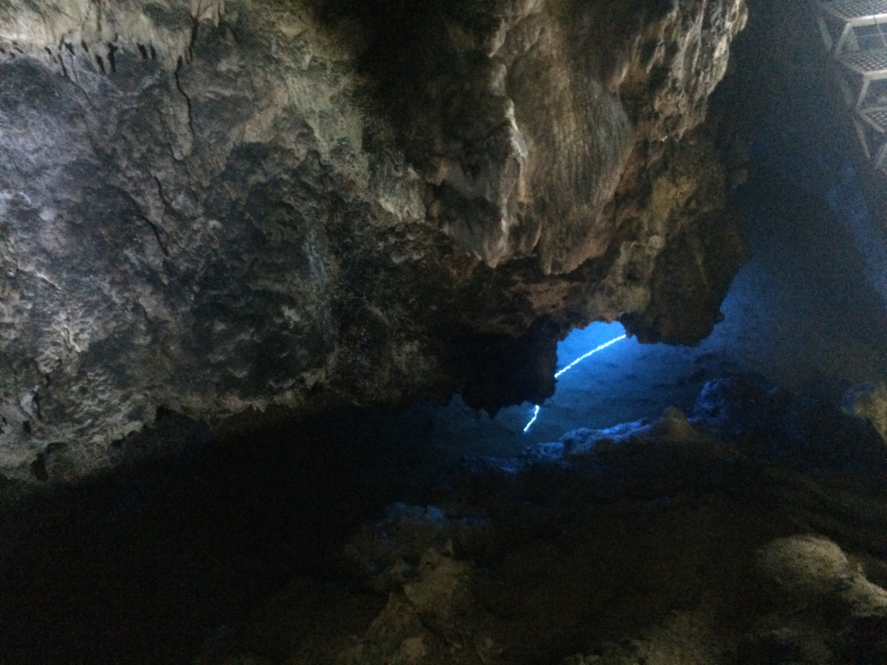
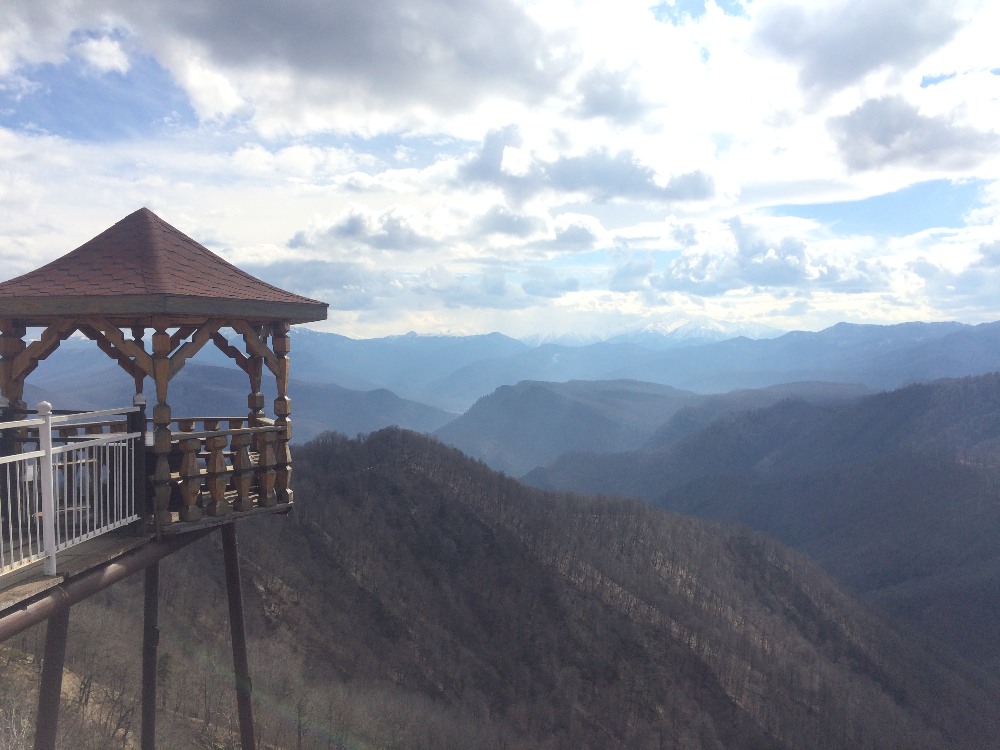

Всем привет! Я уже давно здесь ничего не писал. Но вот настал тот момента когда есть что сказать. Речь пойдёт о моём путешествии в Адыгею. Скажу честно, я редко куда то так далеко езжу, но выпал шанс съездить туда куда даже и не мечтал. И я его не упустил. Горы вот что нужно увидеть каждому из нас. Потому что мы именно в горах находим то чего раньше не могли найти в обыденной жизни. А именно стремление к хорошему, чему то светлому и по настоящему величественному. Парою мы делаем ошибки которые мы не в силах исправить и именно душевное спокойствие помогает нам преодолеть все трудности и невзгоды. Горы вот ваше исцеление, они дают то что не может дать никто.
Отправляясь в горы даже если и на один день нужно обязательно подготовиться. Да и вообще к любому путешествию нужно готовится. Так поступил и я. Собрал рюкзак совсем необходимым, а именно: ножик, спички, фонарик, провизия, вода, телефон 2 штуки, часы, компас, тёплая одежда, удобная обувь. Пожалуй всё. Ах да, и будьте готовы к разным погодным условиям. Мне с погодой повезло, было тепло и солнечно.
И в путь, дорогие друзья!Есть что сказать!
Горы это много впечатлений и эмоций которые ты раньше не испытывал. Советую всем побывать в горах!
Фотоотчёт
Адыгея - главная панорама Лаго-Наки

Адыгея - лес, пешая прогулка
 

Адыгея - пешера, сталактиты и 100% влажность
 

Адыгея - панорама, свежий воздух и море эмоций

Адыгея - панорама, вид с гостиници

Опубликовать в соц. сетях